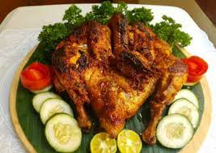
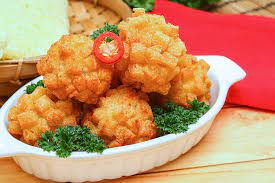
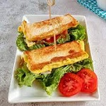

Ayam Bakar Taliwang
Feb 12, 2007Views : 3,487,497Ayam Bakar Taliwang adalah makanan khas Pulau Lombok dari Kampung Karang Taliwang, Kota Mataram, Nusa Tenggara Barat yang berbahan dasar daging ayam.
Lihat selengkapnya

Bola Udang
Feb 12, 2007Views : 3,487,497Bola udang adalah makanan khas di Wuhan, Hubei, Cina. Itu dibuat dengan udang tubuh bagian atas, tanpa organ dalam, dan sisa tubuh bagian bawah, Penampilannya seperti bola.
Lihat selengkapnya

Roti Telur Panggang
Feb 12, 2007Views : 3,487,497Roti telur panggang merujuk kepada kepingan roti yang dibakar atau dipanggang dengan proses radiasi termal sehingga roti menjadi lebih kecoklatan dan garing.
Lihat selengkapnya